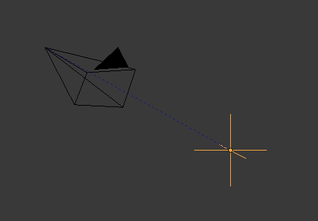

Empties¶
The “Empty” is a single coordinate point with no additional geometry. Because an Empty has no volume and surface, it cannot be rendered. Still it can be used as a handle for many purposes.
Selecting & Editing¶
An Empty can only be edited in Object Mode, which includes its transformation and parenting properties. For other tools see the Object section.
- Apply Scale Ctrl-A
- While Empties don’t exactly have any object data attached to them which can be used for supporting “true” apply scale (i.e. with non-uniform scaling), they do have Display Size which controls how large the empties are displayed (before scaling). This works by taking the scale factor on the most-scaled axis, and combines this with the existing empty Display Size to maintain the correct dimensions on that axis.
Properties¶
Empty Display Types.
- Display
- Plain Axes
- Displays as six lines, initially with one pointing in each of the +X, -X, +Y, -Y, +Z, and -Z axis directions.
- Arrows
- Displays as arrows, initially pointing in the positive X, Y, and Z axis directions, each with a label.
- Single Arrow
- Displays as a single arrow, initially pointing in the +Z axis direction.
- Circle
- Displays as a circle initially in the XZ plane.
- Cube
- Displays as a cube, initially aligned to the XYZ axes.
- Sphere
- Displays as an implied sphere defined by three circles. Initially, the circles are aligned, one each, to the X, Y, and Z axes.
- Cone
- Displays as a cone, initially pointing in the +Y axis direction.
- Image
Empties can display images. This can be used to create reference images, including blueprints or character sheets to model from. The image is displayed regardless of the 3D display mode.
Empty Displays settings can be accessed from panel.
- Use Alpha
- Use alpha blending instead of alpha-test (blends with the background but can have depth sorting artifacts).
- Transparency
- Fade the images transparency (uses the Object Color’s Alpha component).
- Offset X, Y
Offset the image origin (where 1.0 represents the width/height of the image).
X=0.5, Y=0.5: Object origin at image center. X=0.0, Y=0.0: Object origin at image bottom, left. X=1.0, Y=1.0: Object origin at image top, right. - Depth
Default: Use normal depth behavior. Front: Always display on top of other objects. Back: Always display behind of other objects. Tip
When using the image as a reference for modeling, it can be useful to set the depth to Front, with a low Transparency.
- Side
Both: Display both the front & back of the empty. Front: Only display the front of the image. Back: Only display the back of the image. Tip
This is useful if you’re using an image as a reference where you have photos from both the front and back, so two empty images can be set only to show when viewed from the correct side.
- Display Orthographic
- Show in orthographic view.
- Display Perspective
Show in perspective view.
Hint
It’s often useful to disable this so reference images don’t get in the way when viewing a model.
- Size
- Controls the size of the empties visualization. This does not change its scale, but functions as an offset.
Usage¶
Empties can serve as transform handles. Some examples of ways to use them include:
Parent object for a group of objects
An Empty can be parented to any number of other objects. This gives the user the ability to control a group of objects easily, and without affecting a render.
Target for constraints
An empty can also be used as a target for normal, or bone constraints. This gives the user far more control; for instance, a rig can easily be set up to enable a camera to point towards an empty using the Track to constraint.
Array offset
An empty can be used to offset an Array Modifier, meaning complex deformations can be achieved by only moving a single object.

An example of an empty being used to control an array. |

An example of an empty being used to control the track to constraint. |
{kind=link}
Other common uses:
- Placeholders
- Rigging controls
- DOF distances
- Reference Images